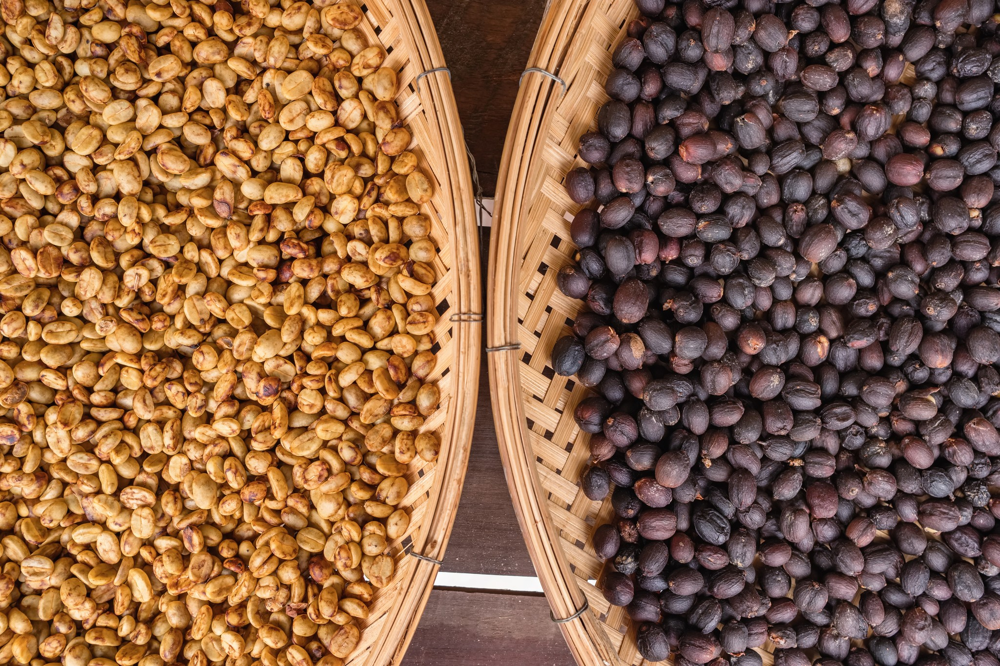

A diferencia del café lavado (a la izquierda en la foto), donde la pulpa del fruto (la cereza) se retira antes del secado, en el proceso natural (a la derecha) el grano se seca con toda la fruta intacta. Este método permite que los granos absorban los sabores dulces y afrutados de la cereza, dando como resultado una taza rica y compleja, a menudo con notas de frutos rojos, tropicales o incluso características similares al vino. 🍓🍍🍷 Por mucho tiempo, los cafés lavados fueron considerados de mayor calidad que los naturales debido a su menor riesgo de defectos y a su percepción como un método más moderno y controlado. El proceso natural, aunque tradicional, presentaba desafíos, ya que la fermentación de la fruta podía ser desigual, generando sabores impredecibles que no siempre eran bien recibidos en los mercados internacionales. Sin embargo, en los últimos años, los productores de café de especialidad han perfeccionado los métodos naturales, utilizando técnicas más precisas y cuidadosas que aseguran un producto de excelente calidad. Esto ha permitido resaltar los sabores únicos y complejos del proceso natural, posicionándolo como una opción cada vez más apreciada por los amantes del café en todo el mundo. 🌟☕ Por mucho tiempo, los cafés lavados fueron considerados de mayor calidad que los naturales debido a su menor riesgo de defectos y a su percepción como un método más moderno y controlado. El proceso natural, aunque tradicional, presentaba desafíos, ya que la fermentación de la fruta podía ser desigual, generando sabores impredecibles que no siempre eran bien recibidos en los mercados internacionales. Sin embargo, en los últimos años, los productores de café de especialidad han perfeccionado los métodos naturales, utilizando técnicas más precisas y cuidadosas que aseguran un producto de excelente calidad. Esto ha permitido resaltar los sabores únicos y complejos del proceso natural, posicionándolo como una opción cada vez más apreciada por los amantes del café en todo el mundo. 🌟☕
El café natural
April 13, 2025
¿Qué es el café natural? El café de proceso natural (o seco) es uno de los métodos más antiguos para procesar granos de café.